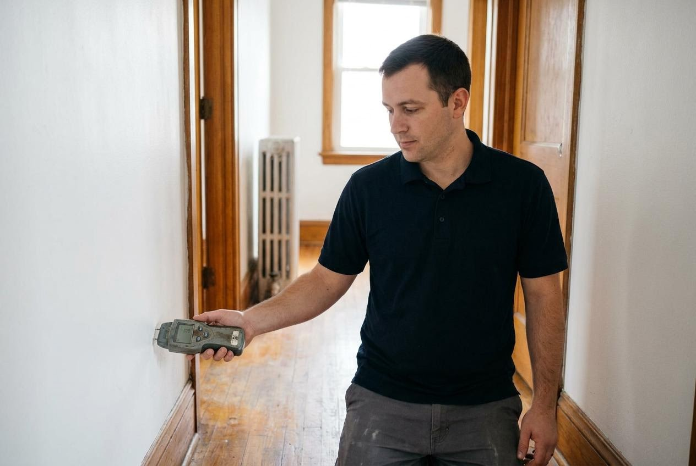

Put simply, mitigation is the work of holding damage to its current size. Repair is a different job. Think of it as all the protective work that comes first, aimed at saving what remains sound. In York, our team handles mitigation by controlling the source, removing the water, containing the wet area and stabilizing the structure. Done well, it shrinks the repair that follows and sometimes removes the need for one.
People often use mitigation and restoration to mean the same thing. In fact there are two separate stages. During mitigation, the urgent part, the loss is halted, its spread is limited and the home is made stable. Once the structure tests dry, restoration takes over and covers repairing or rebuilding finishes, drywall and floors that were damaged. Because an insurer lists each one separately as well, knowing where you stand in the process is helpful.
Four tasks make up most mitigation visits. First is source control, which keeps more water from coming in. Second is extraction, to clear out standing water. Third is containment, where controlled airflow and plastic barriers keep contaminants and moisture away from clean rooms. Stabilization, which means removing materials that cannot be saved, treating surfaces with antimicrobial, and setting air movers and dehumidifiers. We also protect furniture and belongings by moving or blocking them up.

Water Damage Mitigation: DIY or Professional?
While some minor restoration tasks can be handled by handy homeowners, most water damage work requires professional expertise, specialized equipment, and proper safety training. Here's a comparison:
| Factor | DIY Approach | Professional Service |
|---|---|---|
| Source control | Shut the valve and hope | Cause verified, isolated, recorded |
| Water removal | Wet vac and a stack of towels | Pumps and extractors clear bulk water |
| Drying check | Touch test on the surface | Moisture tracked until numbers are normal |
| Material decisions | Hoping wet materials recover | Meter data drives each removal |
| Containment | Closed doors and towels | Airflow control behind sealed plastic |
Ready to Solve Your Water Damage Mitigation Problem?
Our IICRC-certified technicians are standing by to help.
Get Help: (706) 730-9473What to Expect From Our Water Damage Mitigation
Our systematic approach delivers quality results on every project. Here's what you can expect when you choose York Restoration:
Stop the Water Source
The supply gets shut off, the broken line capped, or the opening letting water in tarped and boarded. When the permanent repair calls for a roofer or plumber, we help schedule it.
Remove Standing Water
We extract standing water using pumps and extraction units, then check carpet and its padding. Getting bulk water out quickly does more to limit damage than any amount of drying equipment alone.
Set Up Containment
We isolate the affected rooms from the rest through airflow control and plastic barriers. That way dust, humidity and contaminants do not move through the home during the work.
Stabilize and Dry
Unsalvageable materials are removed, surfaces get antimicrobial treatment, and air movers and dehumidifiers are set. We log moisture readings each visit until the structure is ready for repairs, usually within 3 to 5 days.
Common Water Damage Mitigation Questions
Signs It Is Time for Water Damage Mitigation
Recognizing the warning signs early can save you time, money, and prevent significant damage to your property. Here are the most common indicators that it's time to call a professional:
- Plumbing repairs are done, but no one has addressed what got wet.
- Underfoot the carpet is spongy because the padding below holds water.
- An opening in the roof or at a window lets rainwater enter the building.
- Following a water loss, indoor air stays damp and condensation forms on the glass.
- One day on, damp materials are beginning to smell musty.
- A leak has been stopped but floors, walls or cabinets are still wet.
- Your insurer has told you to take reasonable steps to prevent further damage.
Early Action Saves Money
What seems like a minor issue today can turn into a major expense tomorrow. If you notice any of these signs, contact York Restoration at (706) 730-9473 for a prompt evaluation.
Want a Professional Opinion?
We provide honest advice and free estimates on all water damage mitigation work.
Get Help: (706) 730-9473Water Damage Mitigation Prevention Tips
A little prevention goes a long way in avoiding expensive restoration emergencies. Follow these tips from our IICRC-certified technicians:
- Never switch the furnace fully off in freezing weather, since pipes can freeze and split.
- Keep gutters clear and downspouts pointed away from the foundation of the house.
- Learn where your main shutoff is and confirm the valve still turns.
- Install an automatic shutoff valve that closes the main when a leak is detected.
- Once a month, look beneath sinks and near toilets for stains, drips or soft spots in the floor.
- Replace rubber washing machine hoses with braided steel lines every five years or so.
Why Hire a Professional for Water Damage Mitigation?
Mitigation is a series of judgment calls made quickly. What drywall stays and dries where it is, and what must be removed? Which category applies, 1, 2 or 3, and did that change after the leak first began? Should the toe kick under the cabinets be pulled? We answer those questions with training and moisture readings rather than by the look or feel of a surface.
There is a claim-related reason to do mitigation right as well. Under most policies you must act reasonably to keep the damage from growing, with proof that you did. We photograph conditions on arrival, record moisture readings daily and keep a list of anything removed. Together those records show the water's effect and our response to it. The repair contractor gets a clear place to start as well, without hidden moisture waiting behind fresh drywall.
Talk to a Water Damage Mitigation Expert
The sooner you call, the sooner we can help. Reach York Restoration for same-day service.
Get Help: (706) 730-9473